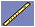
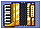
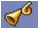
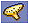
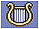

8
Instrumentos

Flauta
Te permitirá empujar determinados bloques.

Acordeón
Podrás ser capaz de bucear cuando consigas este objeto.

Trompeta
Harás que aparezcan algunos bloques en ciertos sitios cuando obtengas este objeto.

Ocarina
Te permitirá crear un puente de notas.

Arpa
Serás capaz de sellar el espíritu de Amon.